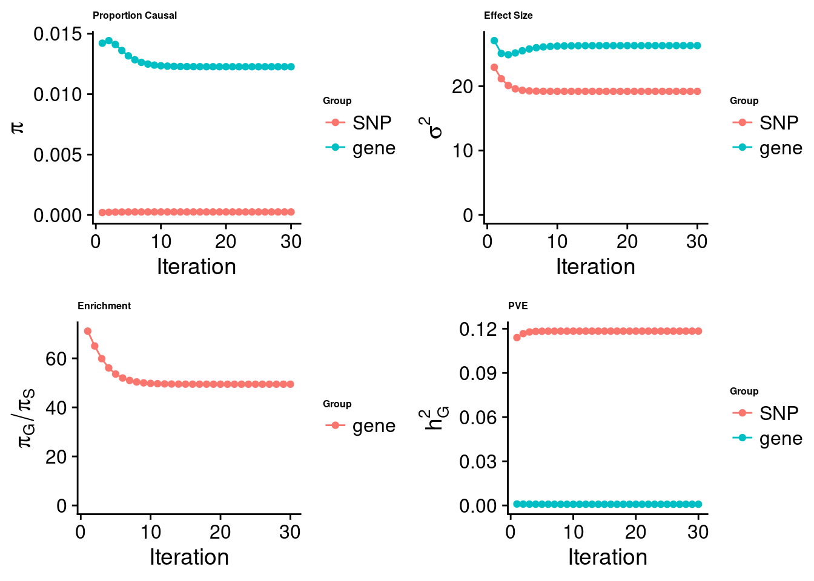
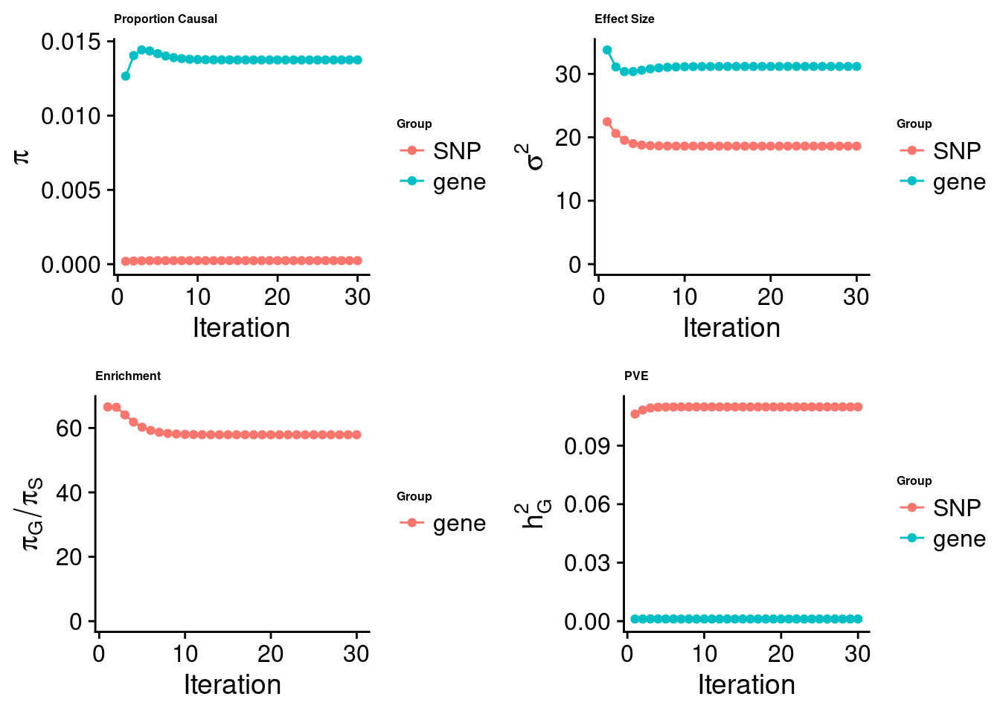
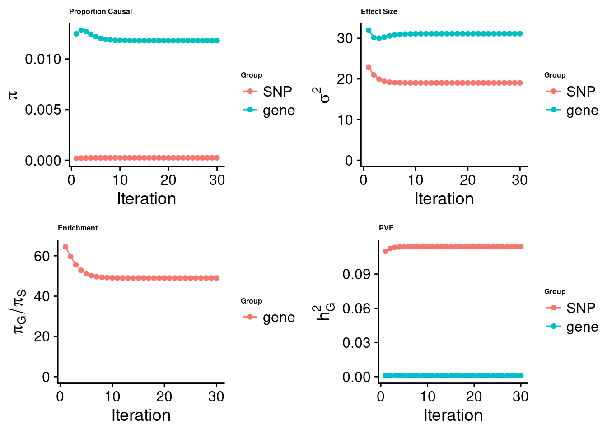
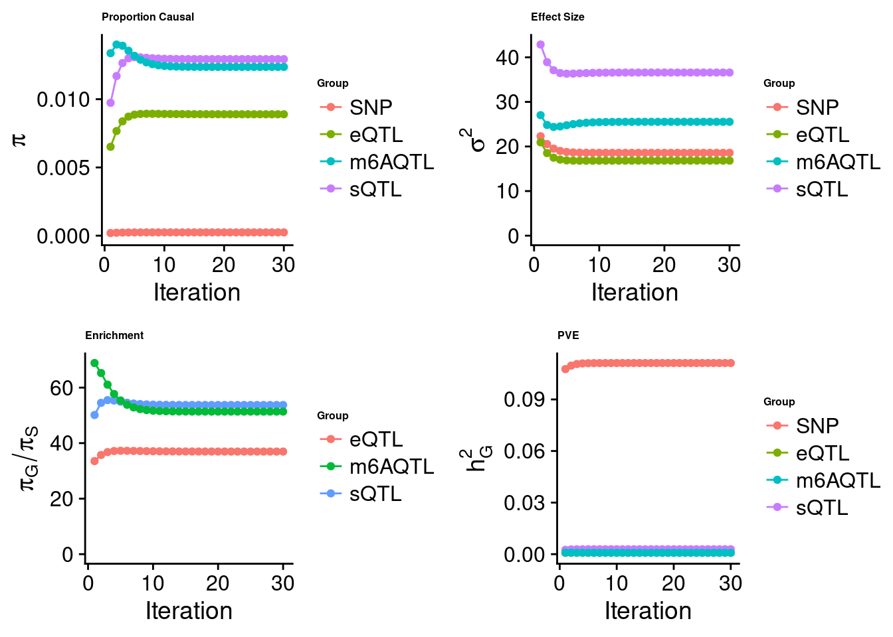

Last updated: 2023-08-10
Checks: 6 1
Knit directory: m6A_in_disease_genetics/
This reproducible R Markdown analysis was created with workflowr (version 1.7.0). The Checks tab describes the reproducibility checks that were applied when the results were created. The Past versions tab lists the development history.
Great! Since the R Markdown file has been committed to the Git repository, you know the exact version of the code that produced these results.
Great job! The global environment was empty. Objects defined in the global environment can affect the analysis in your R Markdown file in unknown ways. For reproduciblity it’s best to always run the code in an empty environment.
The command set.seed(20230331) was run prior to running
the code in the R Markdown file. Setting a seed ensures that any results
that rely on randomness, e.g. subsampling or permutations, are
reproducible.
Great job! Recording the operating system, R version, and package versions is critical for reproducibility.
Nice! There were no cached chunks for this analysis, so you can be confident that you successfully produced the results during this run.
Using absolute paths to the files within your workflowr project makes it difficult for you and others to run your code on a different machine. Change the absolute path(s) below to the suggested relative path(s) to make your code more reproducible.
| absolute | relative |
|---|---|
| ~/projects/m6A_in_disease_genetics/code/ctwas/ctwas_config_b37.R | code/ctwas/ctwas_config_b37.R |
Great! You are using Git for version control. Tracking code development and connecting the code version to the results is critical for reproducibility.
The results in this page were generated with repository version f68611f. See the Past versions tab to see a history of the changes made to the R Markdown and HTML files.
Note that you need to be careful to ensure that all relevant files for
the analysis have been committed to Git prior to generating the results
(you can use wflow_publish or
wflow_git_commit). workflowr only checks the R Markdown
file, but you know if there are other scripts or data files that it
depends on. Below is the status of the Git repository when the results
were generated:
Ignored files:
Ignored: .ipynb_checkpoints/
Ignored: analysis/m6A_switch_to_disease_h2g.nb.html
Ignored: data/plots/
Untracked files:
Untracked: analysis/.ipynb_checkpoints/
Untracked: analysis/IBD_E_S_m6A.Rmd
Untracked: analysis/IBD_E_S_m6A_output.Rmd
Untracked: analysis/LDL_E_S_m6A.Rmd
Untracked: analysis/LDL_m6A_output.Rmd
Untracked: analysis/RA_m6A_output.Rmd
Untracked: analysis/WhiteBlood_WholeBlood_E_M.Rmd
Untracked: analysis/learn_ctwas.Rmd
Untracked: analysis/lymph_m6A_output.Rmd
Untracked: analysis/pre_weights_m6AQTL.txt
Untracked: analysis/rbc_E_S_m6A_output.Rmd
Untracked: analysis/rbc_m6A_output.Rmd
Untracked: analysis/wbc_E_S_m6A_output.Rmd
Untracked: code/.ipynb_checkpoints/
Untracked: code/all_m6a_sites_with_paired_cisNATs_summary.csv
Untracked: code/check_double_strand.ipynb
Untracked: code/check_double_strand_v2.ipynb
Untracked: code/ctwas/
Untracked: code/figure/
Untracked: code/learn_gviz.Rmd
Untracked: code/learn_gviz.html
Untracked: code/learn_gviz.nb.html
Untracked: code/m6AQTL_finemapping.Rmd
Untracked: code/summary_TWAS_coloc_m6A_2023.Rmd
Untracked: code/test_gviz.ipynb
Untracked: code/twas_genes_PP4_0.3_immune_traits_trackplots.pdf
Untracked: data/.ipynb_checkpoints/
Untracked: data/ADCY7_gwas_input.tsv
Untracked: data/ADCY7_qtl_input.tsv
Untracked: data/Allergy_full_coloc.txt
Untracked: data/Asthma_full_coloc.txt
Untracked: data/CAD_full_coloc.txt
Untracked: data/Eosinophil_count_full_coloc.txt
Untracked: data/GSE125377_jointPeakReadCount.txt
Untracked: data/IBD_full_coloc.txt
Untracked: data/JointPeaks.bed
Untracked: data/Li2022_dsRNAs.xlsx
Untracked: data/Lupus_full_coloc.txt
Untracked: data/RA_full_coloc.txt
Untracked: data/TABLE1_hg19.txt
Untracked: data/TABLE1_hg19.txt.zip
Untracked: data/__MACOSX/
Untracked: data/coloc_blood_traits.csv
Untracked: data/crohns_disease_full_coloc.txt
Untracked: data/edit_sites_and_GE_neg_correlated.txt
Untracked: data/edit_sites_and_GE_pos_correlated.txt
Untracked: data/features
Untracked: data/human_EERs.csv
Untracked: data/human_EERs.txt
Untracked: data/lymph_full_coloc.txt
Untracked: data/m6A_TWAS_results.csv
Untracked: data/m6a_TWAS_genes.txt
Untracked: data/m6a_joint_calling_peaks.csv
Untracked: data/nat_sense_pairs.csv
Untracked: data/plt_full_coloc.txt
Untracked: data/rbc_full_coloc.txt
Untracked: data/rdw_full_coloc.txt
Untracked: data/reported_AS_targets_S1.txt
Untracked: data/reported_AS_wanowska.txt
Untracked: data/sig_coloc_results/
Untracked: data/test_locuscomparer.pdf
Untracked: data/ulcerative_colitis_full_coloc.txt
Untracked: data/wbc_full_coloc.txt
Untracked: output/.ipynb_checkpoints/
Untracked: output/all_m6a_sites_with_cisNATs.csv
Untracked: output/all_m6a_sites_with_paired_cisNATs_summary.csv
Untracked: output/all_m6a_sites_with_paired_cisNATs_summary_PP40.3.csv
Untracked: output/all_m6a_sites_with_paired_cisNATs_summary_PP40.5.csv
Untracked: output/all_m6a_sites_with_paired_cis_NATs.csv
Untracked: output/fine_mapped_m6AQTLs_TWAS_genes_highPP4.rds
Untracked: output/gene_summary.csv
Untracked: output/immune_related_m6A_targets.csv
Untracked: output/m6aQTL_dsRNAs_PPP2R3C_PRORP.pdf
Untracked: output/m6a_peaks_nearby_dsRNAs.csv
Untracked: output/m6a_sites_near_all_dsRNAs_twas.csv
Untracked: output/m6a_sites_near_dsRNAs_coloc.csv
Untracked: output/m6a_sites_near_dsRNAs_twas.csv
Untracked: output/m6a_sites_near_dsRNAs_twas_summary.csv
Untracked: output/m6a_sites_overlapping_NAT_twas.csv
Untracked: output/m6a_sites_overlapping_dsRNAs_coloc.csv
Untracked: output/m6a_sites_overlapping_dsRNAs_twas.csv
Untracked: output/m6a_sites_overlapping_dsRegions.csv
Untracked: output/m6a_sites_overlapping_dsRegions_coloc.csv
Untracked: output/negatively_correlated_genes.txt
Untracked: output/postively_correlated_genes.txt
Untracked: output/rs1806261_RABEP1-NUP88_focused_locusview.pdf
Untracked: output/rs1806261_RABEP1-NUP88_locusview.pdf
Untracked: output/rs3177647_MAPKAPK5-AS1-MAPKAPK5_locusview.pdf
Untracked: output/rs3204541_DDX55-EIF2B1_locusview.pdf
Untracked: output/rs7184802_ADCY7-BRD7_locusview.pdf
Untracked: output/rs7184802_ADCY7_locuscompare.pdf
Untracked: output/twas_genes_PP4_0.3_immune_traits_trackplots.pdf
Untracked: output/twas_genes_PP4_0.5_blood_traits_trackplots.pdf
Untracked: output/twas_m6a_sites_with_all_cisNATs.RDS
Untracked: output/twas_m6a_sites_with_cisNATs_range.RDS
Untracked: output/twas_m6a_sites_with_the_nearest_cisNAT.RDS
Untracked: twas_genes_PP4_0.3_immune_traits_trackplots.pdf
Unstaged changes:
Modified: analysis/index.Rmd
Modified: analysis/m6A_switch_to_disease_h2g.Rmd
Note that any generated files, e.g. HTML, png, CSS, etc., are not included in this status report because it is ok for generated content to have uncommitted changes.
These are the previous versions of the repository in which changes were
made to the R Markdown (analysis/wbc_m6A_output.Rmd) and
HTML (docs/wbc_m6A_output.html) files. If you’ve configured
a remote Git repository (see ?wflow_git_remote), click on
the hyperlinks in the table below to view the files as they were in that
past version.
| File | Version | Author | Date | Message |
|---|---|---|---|---|
| Rmd | f68611f | Jing Gu | 2023-08-10 | wflow_publish("~/projects/m6A_in_disease_genetics/analysis/wbc_m6A_output.Rmd") |
| html | 170a310 | Jing Gu | 2023-08-10 | gene-association with ctwas |
# top 1 method
res <- impute_expr_z(z_snp, weight = weight, ld_R_dir = ld_R_dir,
method = NULL, outputdir = outputdir, outname = outname.e,
harmonize_z = T, harmonize_wgt = T, scale_by_ld_variance=F,
strand_ambig_action_z = "recover",
recover_strand_ambig_wgt = T
# lasso/elastic-net method
res <- impute_expr_z(z_snp, weight = weight, ld_R_dir = ld_R_dir,
method = NULL, outputdir = outputdir, outname = outname.e,
harmonize_z = F, harmonize_wgt = F, scale_by_ld_variance=T,
strand_ambig_action_z = "recover",
recover_strand_ambig_wgt = TGWAS: UK Biobank GWAS summary statistics - European individuals
Weights: FUSION weights using top1, lasso, or elastic-net models converted into PredictDB format
Imputation: For the lasso and elastic-net models, I made mistakes in not harmonizing QTL SNPs and GWAS/LD SNPs, and in performing scaling for FUSION weights.
cTWAS analysis on m6A alone
[1] "Check convergence for the top1 model:"
[1] "Table of group size:"
SNP gene
8713250 888
SNP gene
estimated_group_prior 2.481e-04 1.227e-02
estimated_group_prior_var 1.920e+01 2.631e+01
estimated_group_pve 1.184e-01 8.178e-04
attributable_group_pve 9.931e-01 6.858e-03
[1] "Check convergence for the enet model:"
[1] "Table of group size:"
SNP gene
8713250 908
SNP gene
estimated_group_prior 2.375e-04 0.01375
estimated_group_prior_var 1.861e+01 31.17344
estimated_group_pve 1.099e-01 0.00111
attributable_group_pve 9.900e-01 0.01001
[1] "Check convergence for the lasso model:"
[1] "Table of group size:"
SNP gene
8713250 912
SNP gene
estimated_group_prior 0.000241 1.180e-02
estimated_group_prior_var 19.018872 3.113e+01
estimated_group_pve 0.113956 9.563e-04
attributable_group_pve 0.991678 8.322e-03$top1
$enet
$lasso
Joint analysis of expression, splicing and m6A
[1] "Check convergence for the top1 model when jointly analyzing expression, splicing and m6A:"
[1] "Table of group size before/after matching with UKBB SNPs:"
SNP eQTL sQTL m6AQTL
prior_group_size 9.324e+06 2005.0000 2191.000 918.0000
group_size 8.713e+06 1928.0000 2123.000 888.0000
percent_of_overlaps 9.345e-01 0.9616 0.969 0.9673
SNP eQTL sQTL m6AQTL
estimated_group_prior 2.406e-04 8.895e-03 0.012934 1.236e-02
estimated_group_prior_var 1.858e+01 1.683e+01 36.589120 2.554e+01
estimated_group_pve 1.112e-01 8.236e-04 0.002867 7.999e-04
attributable_group_pve 9.612e-01 7.120e-03 0.024783 6.916e-03$top1
Joining with `by = join_by(ensembl_gene_id)`For m6A or splicing QTLs, they are assigned to the nearest genes (m6A needs to be confirmed with Kevin).
Top 20 rows of SNPs or genes with PIP > 0.6
$eQTL
hgnc_symbol susie_pip type region_tag
1913 CSNK1G1 0.9587 eQTL 15_29
1916 RAPGEFL1 0.7362 eQTL 17_23
132 NDUFS2 0.6213 eQTL 1_81
$m6AQTL
hgnc_symbol susie_pip type region_tag
4938 SLC9A3R1 0.9539 m6AQTL 17_42
4922 ZKSCAN5 0.7863 m6AQTL 7_61
4067 THEMIS2 0.7816 m6AQTL 1_19
4312 TRAM2 0.7091 m6AQTL 6_39
$sQTL
hgnc_symbol susie_pip type region_tag
4000 RN7SKP83 1.0000 sQTL 2_54
4011 CCM2 0.9932 sQTL 7_33
2385 ADPRH 0.7962 sQTL 3_74
4033 SLIT1 0.7387 sQTL 10_61
3788 ZNF225-AS1 0.6957 sQTL 19_30 hgnc_symbol region_tag susie_pip z
1 SLC9A3R1 17_42 0.9539 -7.630
2 ZKSCAN5 7_61 0.7863 7.158
3 THEMIS2 1_19 0.7816 6.277
4 TRAM2 6_39 0.7091 5.233
5 BANF1 11_36 0.5786 6.174
6 TRIT1 1_25 0.5278 5.298
7 S1PR2 19_9 0.5220 9.939
8 WAC-AS1 10_20 0.4945 11.169
9 SQSTM1 5_108 0.4934 -4.857
10 CD320 19_8 0.3627 -4.062
11 SUPT5H 19_26 0.3551 -5.837
12 HMGN4 6_20 0.2707 4.297
13 MDM2 12_42 0.2706 4.606
14 SMG9 19_30 0.2544 3.901
15 CREB3L2 7_84 0.2449 -3.563
16 CNDP2 18_44 0.2407 3.360
17 CD79B 17_37 0.2406 5.091
18 CAND1 12_41 0.2377 -3.502
19 CHURC1 14_30 0.2315 -3.465
20 ADCY7 16_27 0.2181 3.717Summing up PIPs for m6A peaks located in the same gene
Top 10 m6A PIPs by genes
# A tibble: 800 × 2
hgnc_symbol total_susie_pip
<chr> <dbl>
1 SLC9A3R1 0.954
2 ZKSCAN5 0.786
3 THEMIS2 0.782
4 TRAM2 0.709
5 BANF1 0.579
6 TRIT1 0.528
7 S1PR2 0.522
8 WAC-AS1 0.513
9 SQSTM1 0.493
10 CD320 0.379
# ℹ 790 more rows peak_id hgnc_symbol region_tag susie_pip z
1 chr2:85823772-85824227 RN7SKP83 2_54 1.0000 5.009
2 chr7:45009474-45009639 CCM2 7_33 0.9932 -11.719
3 chr3:119582452-119624602 ADPRH 3_74 0.7962 5.622
4 chr10:97007123-97023621 SLIT1 10_61 0.7387 -7.331
5 chr19:44112259-44118381 ZNF225-AS1 19_30 0.6957 -4.929
6 chr5:122111457-122130961 ZNF474 5_74 0.5628 -6.687
7 chr11:67120548-67124214 KDM2A 11_37 0.5416 -4.432
8 chr6:29693820-29694660 ZFP57 6_23 0.5000 -16.046
9 chr6:29694781-29695734 ZDHHC20P1 6_23 0.5000 -16.046
10 chr11:47761655-47765505 FNBP4 11_29 0.4878 10.101
11 chr19:13885521-13886291 BRME1 19_11 0.4797 6.500
12 chr19:13886427-13888866 BRME1 19_11 0.4797 6.500
13 chr7:72986365-72987174 STAG3L3 7_47 0.4741 6.870
14 chr1:224544695-224548197 CNIH3 1_116 0.4698 8.830
15 chr19:1036561-1037624 CNN2 19_2 0.4643 6.170
16 chr19:1036999-1037624 CNN2 19_2 0.4643 -6.170
17 chr17:47288203-47295101 ITGB3 17_28 0.4626 -4.041
18 chr19:49458856-49459455 ALDH16A1 19_34 0.4605 -4.118
19 chr7:5569315-5570155 ACTB 7_7 0.4288 -4.696
20 chr16:67690548-67690704 GFOD2 16_36 0.3912 -3.955Summing up PIPs for spliced introns located in the same gene
Top 10 splicing PIPs by genes
# A tibble: 10 × 2
hgnc_symbol total_susie_pip
<chr> <dbl>
1 RN7SKP83 1.00
2 CCM2 0.993
3 BRME1 0.959
4 CNN2 0.929
5 LINC02767 0.904
6 LINC02834 0.811
7 ADPRH 0.796
8 ZNF225-AS1 0.748
9 SLIT1 0.739
10 CNIH3 0.690 hgnc_symbol combined_pip expression_pip splicing_pip m6A_pip region_tag
2301 RN7SKP83 1.000 0.00000 1.0000000 0.000000 2_54
413 CCM2 0.993 0.00000 0.9932084 0.000000 7_33
610 CSNK1G1 0.969 0.95872 0.0000000 0.010146 15_29
285 BRME1 0.959 0.00000 0.4797074 0.000000 19_11
2601 SLC9A3R1 0.954 0.00000 0.0000000 0.953899 17_42
548 CNN2 0.929 0.00000 0.0001447 0.000000 19_2
1445 LINC02767 0.904 0.00000 0.2984697 0.000000 1_107
1448 LINC02834 0.811 0.00000 0.0247987 0.000000 9_41
65 ADPRH 0.796 0.00000 0.7961515 0.000000 3_74
3195 ZKSCAN5 0.786 0.00000 0.0000000 0.786335 7_61
2832 THEMIS2 0.782 0.00000 0.0000000 0.781582 1_19
2939 TRAM2 0.755 0.04565 0.0000000 0.709110 6_39
3214 ZNF225-AS1 0.748 0.00000 0.6956932 0.000000 19_30
2608 SLIT1 0.739 0.00000 0.7386585 0.000000 10_61
2226 RAPGEFL1 0.736 0.73623 0.0000000 0.000000 17_23
93 ALDH16A1 0.692 0.03207 0.1927717 0.006591 19_34
547 CNIH3 0.690 0.00000 0.4697789 0.000000 1_116
1772 NDUFS2 0.621 0.62125 0.0000000 0.000000 1_81
2869 TMEM156 0.606 0.17597 0.2148226 0.000000 4_32
411 CCDC9 0.597 0.59710 0.0000000 0.000000 19_33
R version 4.2.0 (2022-04-22)
Platform: x86_64-pc-linux-gnu (64-bit)
Running under: CentOS Linux 7 (Core)
Matrix products: default
BLAS/LAPACK: /software/openblas-0.3.13-el7-x86_64/lib/libopenblas_haswellp-r0.3.13.so
locale:
[1] LC_CTYPE=en_US.UTF-8 LC_NUMERIC=C LC_TIME=C
[4] LC_COLLATE=C LC_MONETARY=C LC_MESSAGES=C
[7] LC_PAPER=C LC_NAME=C LC_ADDRESS=C
[10] LC_TELEPHONE=C LC_MEASUREMENT=C LC_IDENTIFICATION=C
attached base packages:
[1] stats4 stats graphics grDevices utils datasets methods
[8] base
other attached packages:
[1] cowplot_1.1.1 ggplot2_3.4.2 GenomicRanges_1.48.0
[4] GenomeInfoDb_1.32.2 IRanges_2.30.1 S4Vectors_0.34.0
[7] BiocGenerics_0.42.0 ctwas_0.1.38 dplyr_1.1.2
[10] workflowr_1.7.0
loaded via a namespace (and not attached):
[1] Rcpp_1.0.11 lattice_0.20-45 getPass_0.2-2
[4] ps_1.7.0 rprojroot_2.0.3 digest_0.6.33
[7] foreach_1.5.2 utf8_1.2.3 R6_2.5.1
[10] evaluate_0.15 httr_1.4.6 highr_0.9
[13] pillar_1.9.0 zlibbioc_1.42.0 rlang_1.1.1
[16] rstudioapi_0.15.0 data.table_1.14.8 whisker_0.4
[19] callr_3.7.3 jquerylib_0.1.4 Matrix_1.6-0
[22] rmarkdown_2.14 labeling_0.4.2 stringr_1.5.0
[25] RCurl_1.98-1.7 munsell_0.5.0 compiler_4.2.0
[28] httpuv_1.6.5 xfun_0.30 pkgconfig_2.0.3
[31] htmltools_0.5.2 tidyselect_1.2.0 tibble_3.2.1
[34] GenomeInfoDbData_1.2.8 logging_0.10-108 codetools_0.2-18
[37] fansi_1.0.4 withr_2.5.0 later_1.3.0
[40] bitops_1.0-7 grid_4.2.0 jsonlite_1.8.7
[43] gtable_0.3.3 lifecycle_1.0.3 git2r_0.30.1
[46] magrittr_2.0.3 scales_1.2.1 cli_3.6.1
[49] stringi_1.7.12 farver_2.1.1 XVector_0.36.0
[52] fs_1.6.3 promises_1.2.0.1 pgenlibr_0.3.6
[55] bslib_0.3.1 generics_0.1.3 vctrs_0.6.3
[58] iterators_1.0.14 tools_4.2.0 glue_1.6.2
[61] processx_3.8.0 fastmap_1.1.1 yaml_2.3.5
[64] colorspace_2.1-0 knitr_1.39 sass_0.4.1